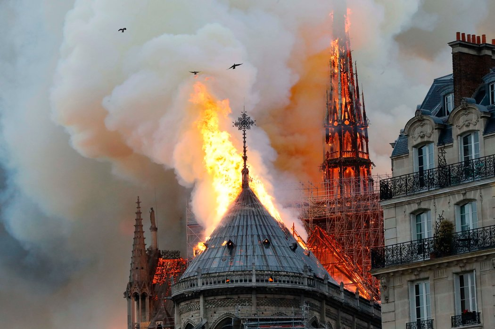
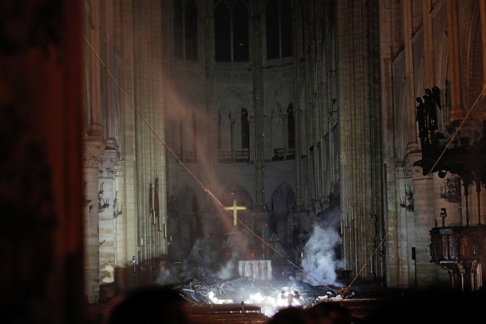
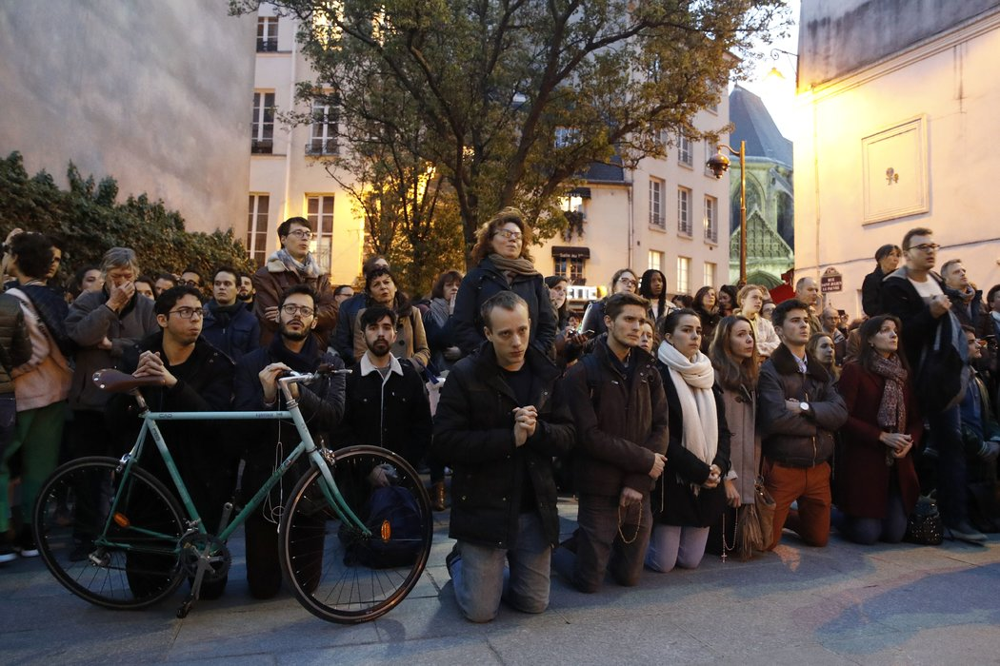
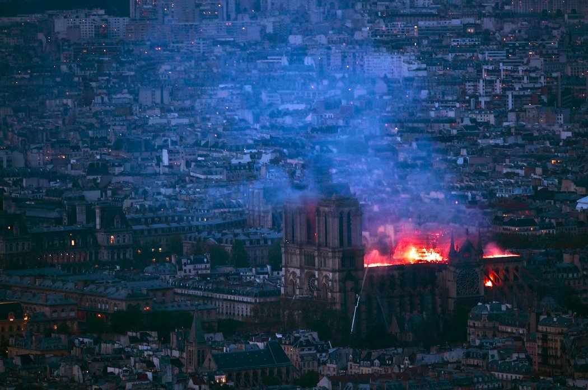
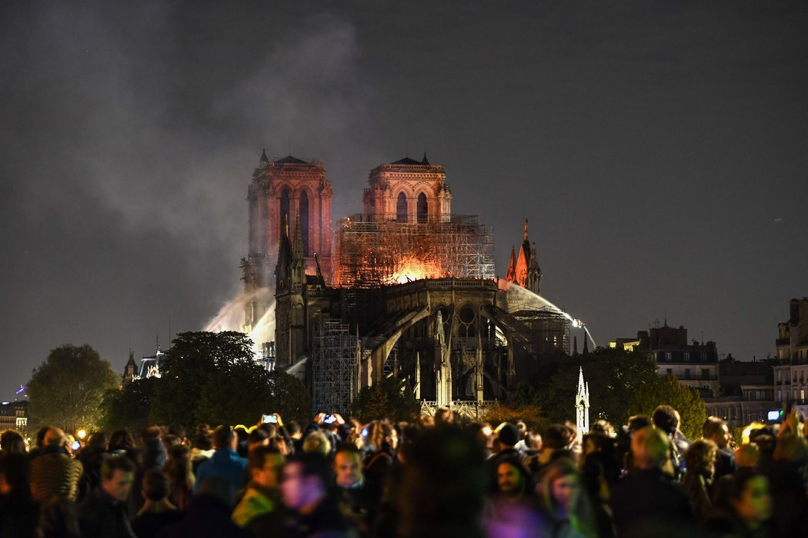
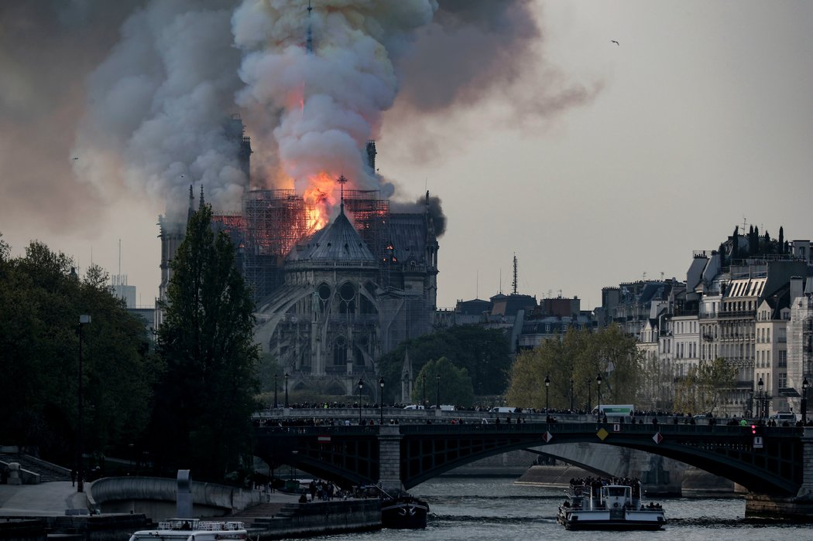
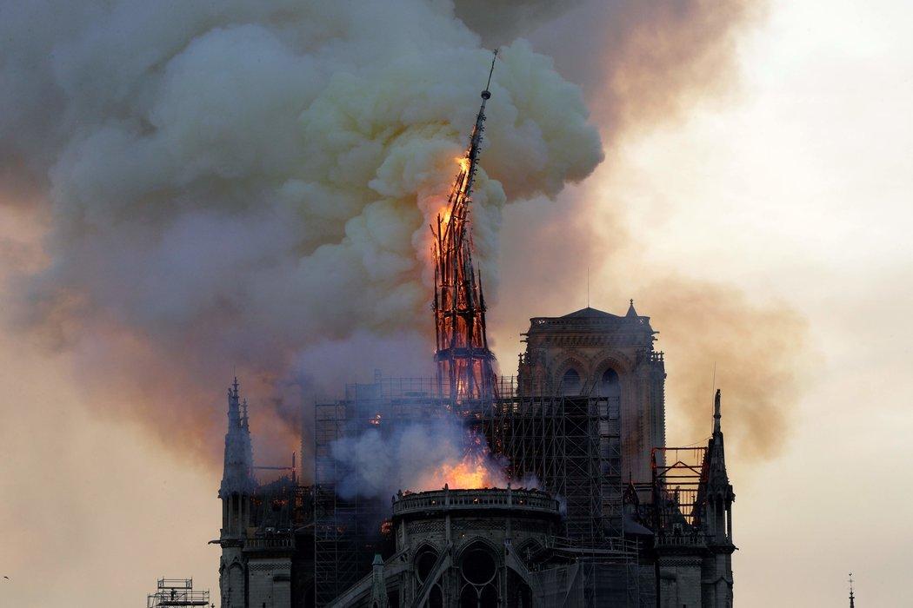
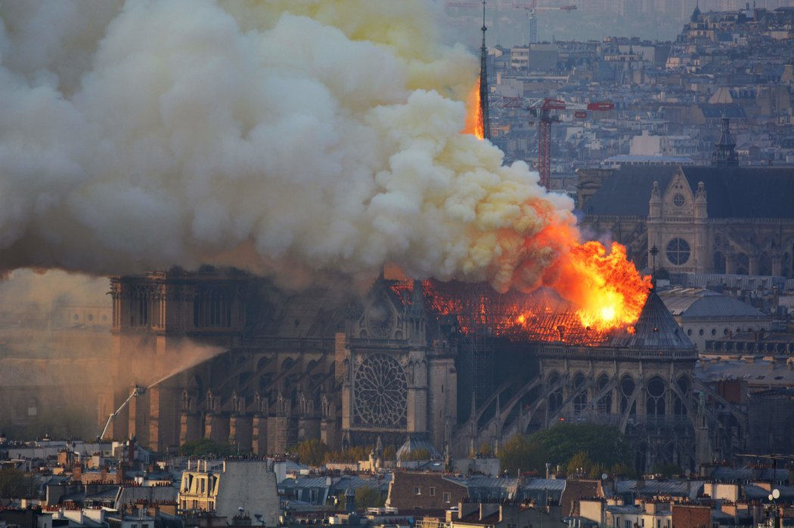

巴黎圣母院大火：塔尖倒塌，三分之二屋顶被毁
Notre-Dame Cathedral in Paris Catches Fire
ADAM NOSSITER, AURELIEN BREEDEN
2019年4月16日

数百名消防员以抵达巴黎圣母院参与灭火，企图拯救这座人类文明的瑰宝。游客和巴黎人聚集在一起为它祈祷，许多人沉浸在绝望和悲痛之中。 FRANCOIS GUILLOT/AGENCE FRANCE-PRESSE — GETTY
PARIS — Notre-Dame cathedral, the symbol of the beauty and history of Paris, was scarred by an extensive fire on Monday evening that caused its delicate spire to collapse, bruised the Parisian skies with smoke and further disheartened a city already back on its heels after weeks of violent protests.
巴黎——圣母院是巴黎之美与悠久历史的象征，周一晚上的一场大火令它伤痕累累，精致的塔尖倒塌，烟雾笼罩巴黎的天空，令这座在数周的暴力抗议中备受打击的城市更加沮丧。
The spectacle of flames leaping from the cathedral’s wooden roof — its spire glowing red then turning into a virtual cinder — stunned thousands of onlookers who gathered along the banks of the Seine and packed into the plaza of the nearby Hôtel de Ville, gasping and covering their mouths in horror and wiping away tears.
火焰在大教堂的木制屋顶上熊熊燃烧，尖顶闪耀着红光，然后几乎化为灰烬，成千上万的旁观者聚集在塞纳河两岸和巴黎市政厅附近的广场，眼前的一幕令他们目瞪口呆， 有人倒吸冷气，有人惊恐地捂住嘴，有人流下眼泪。

大火过后的圣母院内部。 POOL PHOTO BY PHILIPPE WOJAZER

上千名巴黎人和游客聚集在塞纳河畔，震惊地看着大火透过大教堂的木屋顶并摧毁了部分尖顶。 YOAN VALAT/EPA, VIA SHUTTERSTOCK
“It is like losing a member of one’s own family,” said Pierre Guillaume Bonnet, a 45-year-old marketing director. “For me there are so many memories tied up in it.”
“感觉就像失去了家庭成员，”45岁的营销总监皮埃尔·纪尧姆·博内(Pierre Guillaume Bonnet)说。“对我来说，这里有太多的回忆。”
Around 500 firefighters battled the blaze for nearly five hours. By 11 p.m. Paris time, the structure had been “saved and preserved as a whole,” the fire chief, Jean-Claude Gallet, said. The two magnificent towers soaring above the skyline had been spared, he said, but two-thirds of the roof was destroyed.
大约500名消防员与大火搏斗了近5个小时。巴黎时间晚11点，消防队长让-克劳德·加莱(Jean-Claude Gallet)表示，这座建筑“整体上得到了保护和保存”。他说，高耸于地平线的两座宏伟塔楼幸免于难，但三分之二的屋顶被毁。

圣母院建于12世纪和13世纪，目前正在进行大规模的翻新工程。 PHILIPPE LOPEZ/AGENCE FRANCE-PRESSE — GETTY IMAGES

消防队员保存了一些教堂中的艺术品，但没有说明大楼内部的损坏情况。 ERIC FEFERBERG/AGENCE FRANCE-PRESSE — GETTY IMAGES
“The worst has been avoided even though the battle is not completely won,” President Emmanuel Macron said in a brief and solemn speech at Notre-Dame on Monday night, vowing that the cathedral would be rebuilt.
“虽然战斗没有完全获胜，但是避免了最糟糕的情况，”法国总统埃马纽埃尔·马克龙(Emmanuel Macron)周一晚间在圣母院发表了简短而庄重的讲话，发誓将重建大教堂。
“This is the place where we have lived all of our great moments, the epicenter of our lives,” he said. “It is the cathedral of all the French.”
“这是我们度过所有伟大时刻的地方，是我们生活的中心，”他说。“它是全体法国人民的大教堂。”

目击者说，当天最后一批游客试图进入教堂时，圣母院的大门突然关闭，且没有任何解释。 IAN LANGSDON/EPA, VIA SHUTTERSTOCK

巴黎圣母院是巴黎最着名的地标之一，每年吸引约1300万游客。 GEOFFROY VAN DER HASSELT/AGENCE FRANCE-PRESSE — GETTY IMAGES
The cause of the fire was not immediately known, officials said. But it appeared to have begun in the interior network of wooden beams, many dating back to the Middle Ages and nicknamed “the forest,” said the cathedral’s rector, Msgr. Patrick Chauvet.
官员表示，起火原因尚不清楚。但教堂主教帕特里克·肖维(Patrick Chauvet)说，火势似乎是从圣母院内部的木梁结构开始的，很多木梁可以追溯到中世纪，绰号“森林”。
No one was killed, officials said, but a firefighter was seriously injured.
官员们说，没有人死亡，但一名消防员受了重伤。
巴黎检察官办公室表示已开始调查失火原因。 THIBAULT CAMUS/ASSOCIATED PRESS

大约500名消防员与大火搏斗近5个小时。 HUBERT HITIER/AGENCE FRANCE-PRESSE — GETTY IMAGES
The fire broke out about 6:30 p.m., upending Mr. Macron’s plans to deliver an important policy speech about trying to heal the country from months of “Yellow Vest” demonstrations that had already defaced major landmarks in the capital and disfigured some of its wealthiest streets.
火灾发生在下午六点半左右，打乱了马克龙发表重要政策演讲的计划。演讲内容与国家从持续数月的“黄背心”示威活动中恢复有关，该运动破坏了首都的几处主要地标，也破坏了一些最富裕街道的面貌。
The tragedy seemed to underscore the challenges heaped before his administration, which has struggled to reconcile the formidable weight of France’s ideals and storied past with the necessity for change to meet the demands of the 21st century.
这场悲剧似乎突显了马克龙政府面临的巨大挑战，他的政府一直在努力调和法国理想和传奇历史的强大影响力，以及为满足21世纪的需求而进行变革的必要性。
A jewel of medieval Gothic architecture built in the 12th and 13th centuries, Notre-Dame is a landmark not only for Paris, where it squats firmly yet gracefully at its very center, but for all the world. The cathedral is visited by about 30,000 people a day and around 13 million people a year.
巴黎圣母院优雅地雄踞于巴黎中心，是12世纪和13世纪中世纪哥特式建筑的瑰宝，它不仅是巴黎的地标性建筑，也是全世界的著名建筑。每天约有3万人参观这座大教堂，每年游客约为1300万人。
For centuries France’s kings and queens were married and buried there. Napoleon was crowned emperor in Notre-Dame in 1804, and the joyous thanksgiving ceremony after the Liberation of Paris in 1944 took place there, led by Charles de Gaulle.
在长达几个世纪的时间里，那里一直是法国国王和王后结婚和被埋葬的地点。1804年，拿破仑在巴黎圣母院加冕为皇帝。1944年巴黎解放后，在夏尔·戴高乐(Charles de Gaulle)的主持下，圣母院举行了欢乐的感恩庆典。
World leaders congregated at the cathedral in a memorial service for Mr. de Gaulle in 1970, and then again for President François Mitterrand in 1996.
1970年，世界各国领导人聚集在这座大教堂，参加戴高乐的追悼会；1996年又在这里参加了弗朗索瓦·密特朗(Francois Mitterrand)总统的追悼会。
On Monday evening, as the last rush of tourists were trying to get in for the day, the doors of Notre-Dame were abruptly shut without explanation, witnesses said. Within moments, tiny bits of white smoke started rising from the spire — which, at 295 feet, was the highest part of the cathedral.
目击者说，周一傍晚，当最后一批游客试图进入巴黎圣母院时，大门突然关闭，没有任何解释。不一会儿，小股白烟开始从295英尺（约合90米）高的塔尖升起，那是大教堂最高的部分。
Billowing out, the smoke started turning gray, then black, making it clear that a fire was growing inside the cathedral, which is currently covered in scaffolding. Soon, orange flames began punching out of the spire, quickly increasing in intensity.
随着浓烟滚滚而出，开始是灰色，然后变成黑色，这清楚地表明，目前被脚手架覆盖的大教堂内，火势正在蔓延。不久后，橙色的火焰开始冲出塔尖，火势迅速增强。
The French police rushed in and started blowing whistles, telling everyone to move back, witnesses said. By then, the flames were towering, spilling out of multiple parts of the cathedral.
目击者称，法国警察冲了过来，开始吹哨子，让所有人退后。到那时，火焰已经高耸入云，从大教堂的多个部分冒出。
Tourists and residents alike came to a standstill, pulling out their phones to call their loved ones. Older Parisians began to cry, lamenting how their national treasure was quickly being lost.
游客和当地民众都驻足不动，拿出手机给亲人打电话。年长的巴黎人开始哭泣，哀叹国宝正在遭受灭顶之灾。
Thousands stood on the banks of the Seine river and watched in shock as the fire tore through the cathedral’s wooden roof and brought down the spire. Video filmed by onlookers and shared on social media showed smoke and flames billowing from the top of the cathedral.
数千人站在塞纳河边，震惊地看着大火冲破大教堂的木质屋顶，摧毁塔尖。由围观者拍摄并在社交媒体上分享的视频显示，大教堂顶部冒出浓烟和火焰。
Jean-Louis Martin, 56, a native of Dijon in eastern France who works at the university in Geneva, gasped as the flames leapt up. “It hurts me,” he said. “There are no words. It’s just horrible.”
56岁的让-路易斯·马丁(Jean-Louis Martin)是法国东部的第戎人，现在日内瓦的大学工作。看着火焰升腾而起，他发出惊叫。 “我好难过，”他说。 “我无法形容。这太可怕了。”
The crowd gasped and cried in horror when the spire fell. “Paris is beheaded,” said Pierre-Eric Trimovillas, 32.
当塔尖倒塌时，众人屏住呼吸，吓得大喊大叫。“巴黎被斩首了，”32岁的皮埃尔-埃里克·特里莫维拉斯(Pierre-Eric Trimovillas)说。
Vincent Dunn, a fire consultant and former New York City fire chief, said that fire hose streams could not reach the top of such a cathedral, and that reaching the top on foot was often an arduous climb over winding steps.
消防顾问、前纽约市消防局局长文森特·邓恩(Vincent Dunn)说，消防水管喷出的水无法够到这样一座大教堂的顶部，而步行到顶部往往又要在蜿蜒的台阶上艰难攀爬。
“These cathedrals and houses of worship are built to burn,” he said. “If they weren’t houses of worship, they’d be condemned.”
“这些大教堂和礼拜堂太容易烧着了，”他说。 “它们若不是礼拜堂，就该被宣布为不安全的危楼了。”
The city’s prosecutor’s office said it had opened an investigation.
巴黎检察官办公室表示已对该事件展开调查。
Monsignor Chauvet said firefighters were able to save some of the cathedral’s artworks but did not say how much was damaged inside the building. A linen fabric associated with Saint Louis, the Holy Crown of thorns and the cathedral’s treasury were saved.
主教肖维表示，消防队员成功地救出了一些大教堂的艺术品，但没说建筑内部的损坏情况。路易九世的亚麻长袍、圣荆棘冠和大教堂的宝库都得以抢救出来。
Mr. Gallet, the fire chief, said firefighters were still rescuing artworks in the building, hours after the fire had started. The main risk, he said, was the smoke within the cathedral, and the fall of materials, including melting lead.
消防队长加莱说，起火好几个小时后，消防队员仍在抢救建筑物内的艺术品。他说，主要风险在于大教堂内的烟雾和坠落的物料，包括熔化的铅。
The cathedral had been undergoing extensive renovation work. Last week, 16 copper statues representing the Twelve Apostles and four evangelists were lifted with a crane so that the spire could be renovated.
大教堂一直在进行大规模的翻修工作。上周，16座代表十二使徒和四位福音书作者的铜像被用起重机吊起，以便对塔尖进行修缮。
The cathedral had been in dire need of a thorough and expensive restoration, André Finot, the cathedral spokesman, told The New York Times in 2017.
大教堂发言人安德烈·菲诺(André Finot)2017年曾告诉《纽约时报》，大教堂迫切需要进行彻底而昂贵的修复。
Broken gargoyles and fallen balustrades had been replaced by plastic pipes and wooden planks. Flying buttresses had been darkened by pollution and eroded by rainwater. Pinnacles had been propped up by beams and held together with straps. In some places, limestone crumbled at a finger’s touch.
残破的滴水嘴兽和掉落的栏杆被塑料管和木板替代。飞拱因污染变暗，受雨水腐蚀。小尖塔要靠梁支撑，并用绑带做了固定。在有些地方，指尖轻轻一点，石灰岩一碰就碎。
Glenn Corbett, an associate professor of fire science at John Jay College in New York, said construction work and renovations had long been a dangerous combination.
纽约约翰·杰伊学院(John Jay College)消防学副教授格伦·科贝特(Glenn Corbett)表示，建筑工程和翻修一直是危险的组合。
“There’s a history of churches and synagogues and other houses of worship falling victim to construction fires,” he said, adding that one of the reasons for the peril was the proximity of open flames on torches, sparks from welders and other hazards on scaffolding to other flammable materials.
“教堂、犹太教堂和其他礼拜堂历来容易成为火灾的牺牲品，”他说。并补充，造成危险的原因包括靠近火炬上的明火、电焊产生的火花、脚手架上的其他危险品，以及各种易燃材料。
In recent years, the Friends of Notre-Dame, a foundation based in the United States, estimated that the structure needed nearly $40 million for urgent repairs. The French state, which owns the cathedral, already devotes up to 2 million euros a year in upkeep, or about $2.4 million.
近年来，据总部位于美国的巴黎圣母院之友基金会(Friends of Notre-Dame)估计，这座建筑需要近4000万美元进行紧急修复。大教堂所属的法国政府每年投入的保养费用已高达200万欧元，约合240万美元。
The fire came during Holy Week, six days before Easter Sunday. For Roman Catholics, the cathedral has been a spiritual pilgrimage site for generations. France has a deep Catholic history, and nearly two-thirds of its population is Catholic, even though fewer and fewer attend Mass.
火灾发生于复活节星期天前六天的圣周期间。对罗马天主教徒而言，这座大教堂一直是几代人的精神朝圣地。法国拥有深厚的天主教历史，近三分之二的人口是天主教徒，尽管参加弥撒的人数越来越少。
“It’s apocalyptic,” said Eleanor Batreau, 45, who organizes pilgrimages to Lourdes and sometimes works at Notre-Dame. “It reminds me of Dresden burning. I’m a Catholic, and Notre-Dame is a symbol of Mary.”
“这就像世界末日，”45岁的埃莉诺·巴特雷奥(Eleanor Batreau)说，他组织去卢尔德(Lourdes)的朝圣活动，有时也在巴黎圣母院工作。“这让我想起德累斯顿大轰炸之后的大火。我是天主教徒，巴黎圣母院是圣母玛利亚的象征。”
The risk of the fire is not just to the cathedral itself, but also to the gargoyles that cover its walls and to the stained glass, particularly its “rose” windows.
火灾的风险不仅在于大教堂本身，也在于覆盖教堂墙面的滴水嘴兽和彩色玻璃，特别是它的大玫瑰窗。
The largest of its bells, which dates to 1681, managed to survive the French Revolution and has been rung at some of the most important events in French history, including both World Wars.
它最大的几座钟可追溯至1681年，它们在法国大革命中幸免于难，曾在法国历史上最重要的事件中敲响，包括两次世界大战。
Yet the fire is likely to be just the latest, if most dramatic, insult to a landmark that has endured decades of neglect and damage, some at the hands of French revolutionaries, through its more than 850-year history.
但这次大火可能只是对这座地标建筑最新一次的损害——如果不是最严重的话。在它逾850载的历史长河中，它曾经历了几十年的弃置与损坏，部分是毁于法国大革命分子手中。
Victor Hugo’s 1831 novel, “Notre-Dame of Paris,” noted even then that “one cannot but regret, cannot but feel indignant at the innumerable degradations and mutilations inflicted on the venerable pile, both by the action of time and the hand of man.”
维克多·雨果1831年的小说《巴黎圣母院》甚至就提到：“人们仍然不免愤慨和感叹，看到时间和人使那可敬的纪念性建筑遭受了无数损伤和破坏。”
Liz Alderman、lian Peltier、Constant MeheutDaphné Anglès和Marlise Simons自巴黎、Alex Marshall自伦敦、Elizabeth Dias自华盛顿、James Glanz自纽约对本文有报道贡献。
翻译：纽约时报中文网